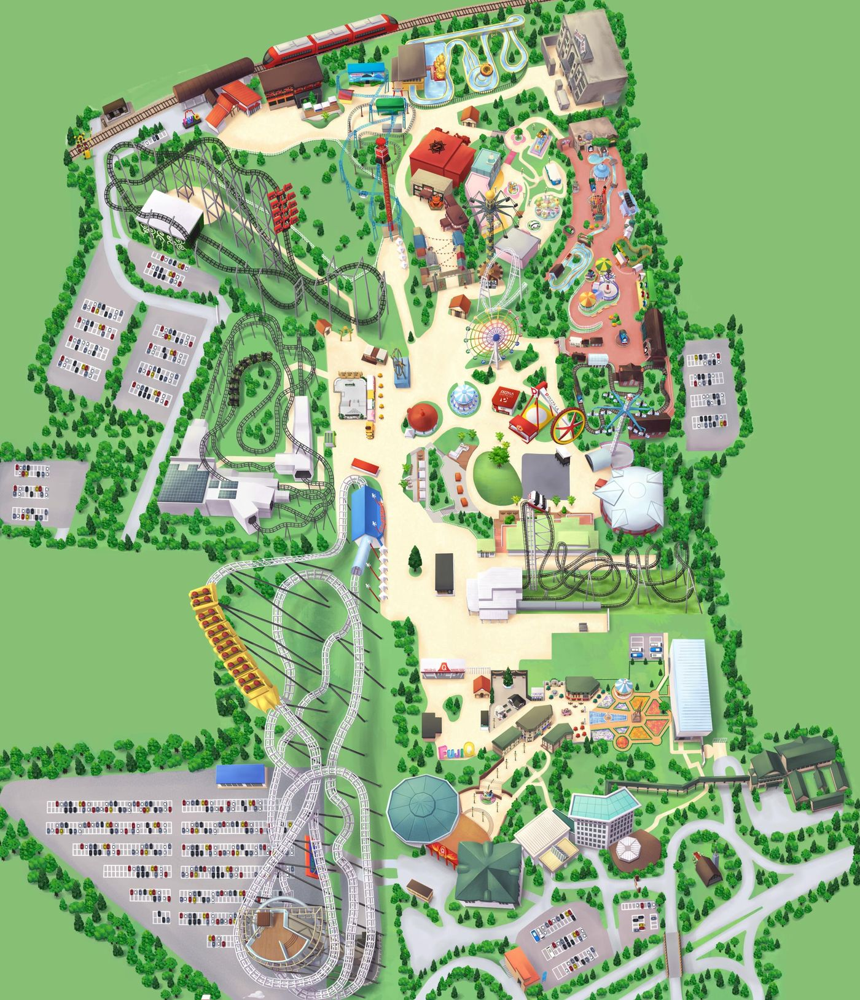

PARK MAP
공원 지도
후지큐 공식 홈페이지의 공원 지도와 공식 핀 위치를 그대로 사용했습니다. 번호를 누르면 설명이 열립니다.

스릴두근가벼움잔잔·체험11/12 운휴
구역 안내 눌러서 지도에 표시
후지비행사와 진격의 거인은 같은 건물이라 핀이 겹칩니다. 핀이 빽빽하면 「크게 보기」를 누르세요.
ATTRACTIONS
놀이기구 전체
키·나이 제한과 요금은 후지큐 공식 홈페이지 기준입니다. 따로 표시가 없는 기구는 모두 원데이 패스로 탈 수 있어요. 125cm OK 키 125cm 기준으로 키 조건 충족 64세까지 나이 상한
SCARE RANKING
무서운 순서
가장 무서운 것부터 순한 것까지. 공식 분류(絶叫·ホラー), 키·나이 제한, 기구 형태와 널리 알려진 평판을 바탕으로 정리한 참고 순서입니다.
●●●●● 극강●●●●○ 매우 무서움●●●○○ 무서움●●○○○ 두근두근●○○○○ 잔잔·체험
PICKS
어린이 추천
키 125cm 기준, 11/12 운휴 기구는 뺐습니다.
PRACTICAL
요금·주차·알아둘 점
요금은 2026년 11월 12일(목) 공식 요금표 기준이며 날짜별로 다릅니다.
🎟️ 원데이 패스 (11/12 기준)
| 어른 (18～64세) | 7,600엔 |
| 중고생 | 7,100엔 |
| 초등학생 | 5,000엔 |
| 시니어 (65세～) · 유아 | 2,400엔 |
- 입장 자체는 무료, 놀이기구는 패스 또는 개별 탑승권
- 전율미궁·MEMORY STUDIO·FUJIYAMA 워크·슬라이더는 패스만으로 이용 불가 (시간지정권 별도)
- 게임 코너는 이용권 별도
⏰ 우선입장 원데이 패스
개장 30분 전 입장
| 어른 | 8,600엔 |
| 중고생 | 8,100엔 |
| 초등학생 | 6,000엔 |
- 온라인 한정, 시니어·유아는 판매 없음
- 우선입장 시간에는 대형 코스터만 이용 가능
⚡ 빠르게 타는 방법
- 절규우선권 인기 기구 대기 단축 유료권. 이용 3일 전 18시부터 온라인 구매, 가격은 시기별 변동
- 대상: 후지비행사·ZOKKON·후지야마·다카비샤 등 (카드에 우선권 표시)
- 분신군 공식 앱 「Q짱」으로 줄 서기 대행, 원데이 패스 +2,000엔 (어른·중고생·초등학생, 수량 한정)
🅿️ 주차
승용차 1대 2,000엔
- 2026년 11월 평일·주말 대부분 기준 (11/25·26은 1,500엔)
- 후지야마 주차장(제1·제3), 에에쟈나이카 주차장(제2, 높이 2.1m 이하)
- 입차 후 90분 안에 나가면 무료
- 나가기 전 정산기 또는 스마트폰으로 사전 정산 후 10분 안에 출차
🌤️ 운영시간
2026.11.12(목) 09:00～19:00
- 날짜마다 다름 (11월은 대체로 09:00 개장, 폐장 18:00～20:00)
- 방문 전 공식 「営業時間・スケジュール」에서 확인
- 토마스랜드 영업시간은 별도 표 (미확인)
⛔ 운휴 안내
- 레드 타워: 당분간 운휴
- 텐테코마이: 2026/10/5～2027년 7월 하순(예정) 공사
- 샤이닝 플라워(대관람차): 2026/11/9～2027/1/31 리뉴얼
- 11/12(목) 운휴 예정: 과학닌구도장, 리락쿠마 스위츠 바이킹
- 후지비행사는 11:15까지, 이후 같은 곳에서 진격의 거인 THE RIDE 운행 (11:30～)